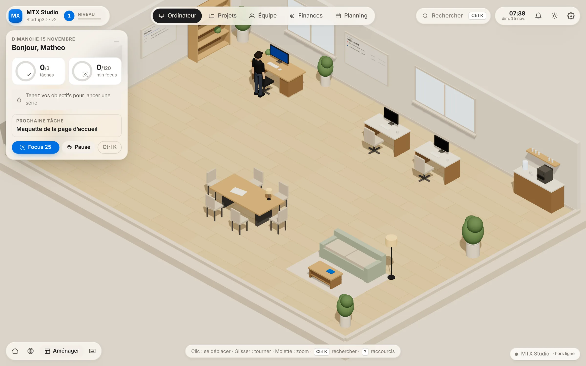
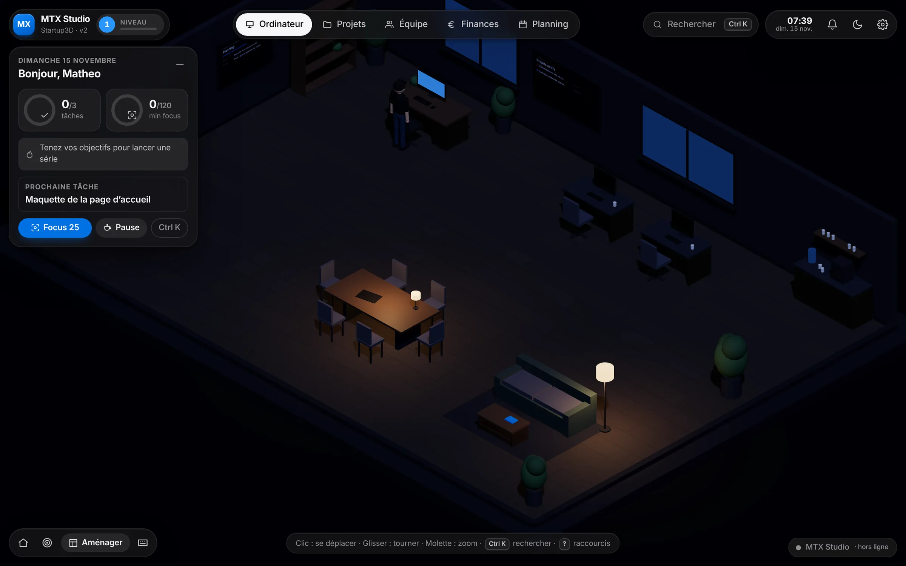
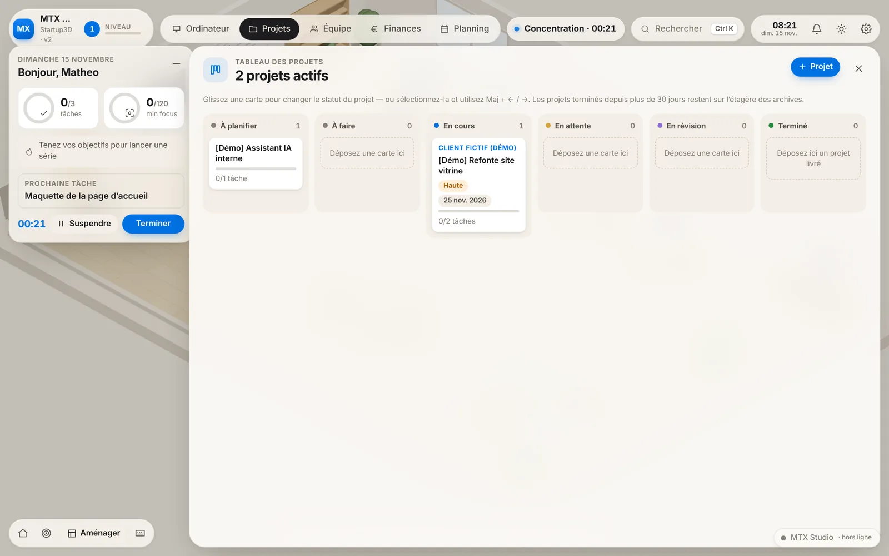
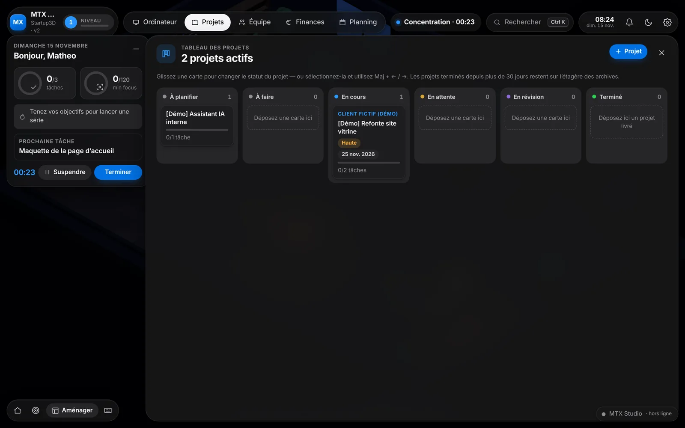
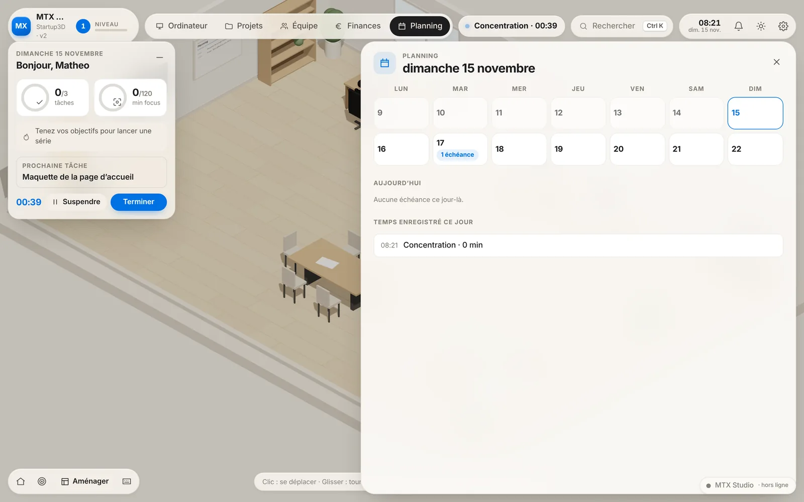
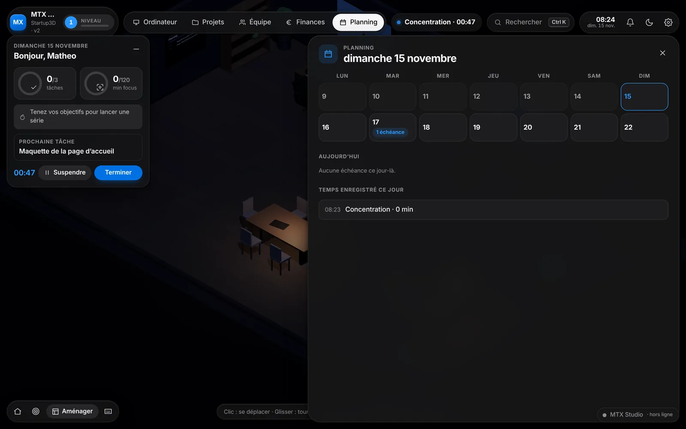
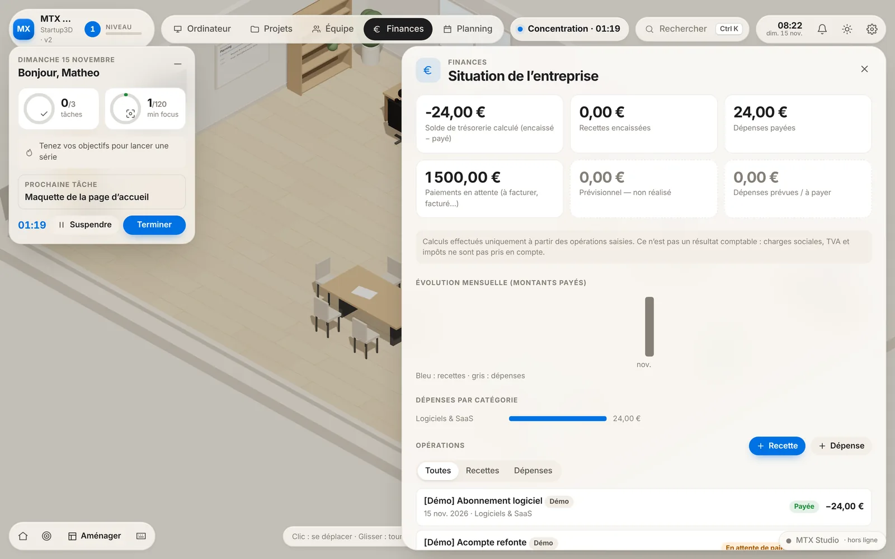
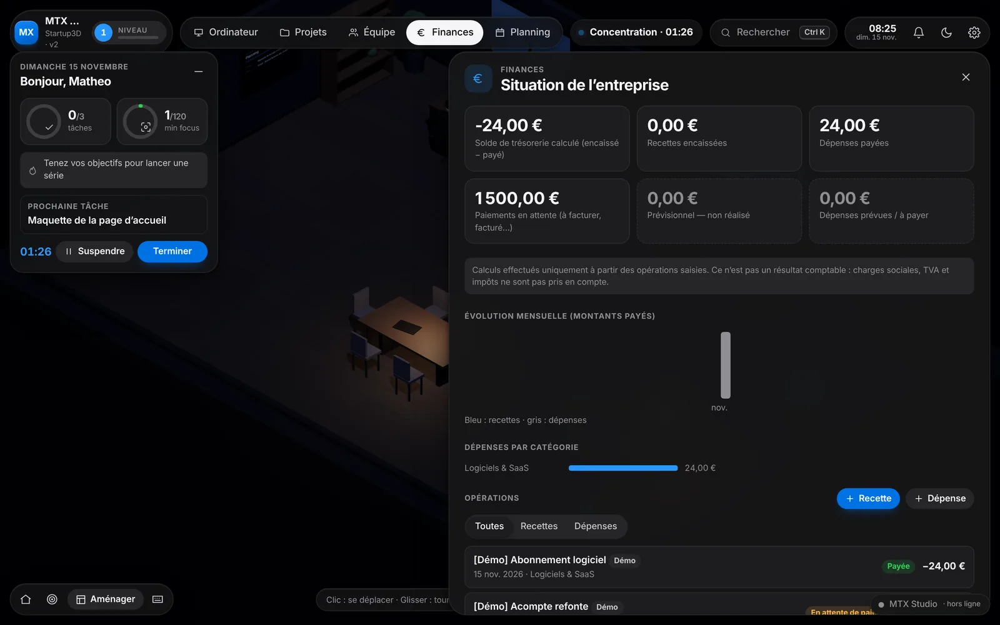

Application web · Gestion d’entreprise en 3D
Gérer son entreprise en traversant son bureau.
Startup3D met l’agence en volume. On clique sur le sol pour s’y rendre, sur l’ordinateur pour les projets, sur la machine à café pour une pause chronométrée, sur la porte pour clore la journée. Chaque geste écrit dans de vraies données.


Le thème automatique de l’app suit l’heure : clair de 7 h à 19 h, sombre le soir et la nuit. Le curseur suit aussi le thème de cette page.
00Le film
Une journée à l’agence, en trente‑cinq secondes.
L’agence de jour puis le soir, les projets, le planning, les finances et la progression : les vraies captures de Startup3D, en mouvement. Il démarre sans le son ; mettez-le pour la musique.
01Les objets
Chaque objet de la pièce ouvre un outil.
Le personnage s’y rend en contournant les meubles, et le panneau s’ouvre à l’arrivée. Les tableaux muraux affichent les vraies données, dessinées en direct. Captures de l’app, dans le thème de la page.






02Progression
Le travail fait monter de niveau. Et ça se voit dans la pièce.
Chaque tâche terminée, chaque minute de concentration rapporte de l’expérience, une seule fois. Seize badges, une série de jours tenus, et des récompenses qui apparaissent dans l’agence.
- Niv. 2Un trophée sur le bureau
- Niv. 3La lampe d’architecte, allumée le soir
- Niv. 4Des tenues dans l’éditeur de personnage
- Niv. 5Une enseigne néon au mur
- Niv. 7Le mobilier passe en noyer
03Mode aménagement
Déplacer un bureau, sans jamais bloquer la porte.
Un meuble devient rouge s’il en chevauche un autre, sort des murs ou coupe l’accès depuis la porte à un point d’usage. L’app calcule le chemin à chaque déplacement. Ici aussi : déplacez le bureau.
À la souris ou au doigt, faites glisser le bureau bleu. Au clavier : flèches pour le déplacer, R pour le tourner.
Plan valide : tout reste accessible.
04Agents IA
Recruter un agent, lui confier une mission, le voir travailler.
Un agent IA reçoit une mission écrite, la traite en arrière-plan, et l’agence le montre à son poste. Son rôle et ses compétences lui sont transmis comme contexte. Les agents simulés, eux, sont toujours étiquetés comme tels.
Mission
« Prépare le plan de la page d’accueil du site vitrine. »
En mission
Léa est à son poste. La session tourne en arrière-plan.
Réponse prête
Notification à la fin, réponse dans la fiche de l’agent.
Claude Code
Une session en arrière-plan, avec le modèle et l’effort choisis. On peut ouvrir la fenêtre pour suivre ou répondre.
Claude Code et Ollama
La même session, servie par un modèle local. Gratuit, à condition d’avoir un modèle assez grand.
Ollama, réponse directe
Une réponse écrite par un modèle local, sans outils : le plus économique pour un brouillon.
Le pont local qui lance ces sessions n’écoute que sur la machine, exige un jeton propre à chaque démarrage, ne passe jamais par un shell et limite les dossiers de travail au dossier personnel.
05Coulisses
La 3D ne stocke rien. Elle regarde.
Toute la logique métier vit à part, sans React ni Three.js. La scène observe les données ; elle ne les écrit jamais.
Une seule source de vérité
Chaque commande s’exécute dans une transaction qui valide chaque écriture, la journalise et l’enregistre d’un bloc dans IndexedDB.
Le temps réel, pas les images
Pauses et concentration se calculent à partir d’horodatages. Fermer l’app ne compte jamais comme du temps travaillé.
Des récompenses qui ne se trichent pas
Chaque gain d’expérience a pour clé l’événement qui l’a produit : recharger ou re-terminer une tâche ne rapporte rien de plus.
Plusieurs onglets, un seul meneur
Les modifications passent d’un onglet à l’autre ; un seul surveille les minuteurs, donc aucune notification en double.
React 19 · TypeScript strict · Three.js · React Three Fiber · Zustand · Zod · IndexedDB · Vite · Vitest
06Questions
Avant d’entrer dans l’agence.
Startup3D est-il un jeu ?
Non, c’est un vrai outil de gestion présenté comme un jeu. Les projets, tâches, temps et finances sont de vraies données ; la 3D, les niveaux et les badges rendent le quotidien plus lisible et plus motivant.
Où sont stockées les données ?
Dans le navigateur, sur l’ordinateur (IndexedDB). Rien n’est envoyé sur un serveur. Une sauvegarde JSON s’exporte et se restaure depuis les réglages, avec validation complète avant tout remplacement.
Les agents de l’agence sont-ils de vraies IA ?
Les deux existent, et l’interface le dit. Les agents simulés animent l’agence et sont étiquetés comme tels. Les agents IA, eux, traitent réellement une mission en arrière-plan avec Claude Code ou un modèle local via Ollama, par un pont local verrouillé.
Faut-il un ordinateur puissant ?
Un navigateur récent avec WebGL suffit pour l’agence. Chrome, Edge ou Arc sont conseillés pour l’accès aux dossiers locaux. Les agents IA demandent Claude Code ou Ollama installés sur la machine.
MTX Studio peut-il créer une expérience 3D pour mon activité ?
Oui. Startup3D montre ce qu’apporte la 3D quand elle sert l’usage : se repérer, comprendre d’un coup d’œil, avoir envie de revenir. Décrivez votre projet à mtxstudio@proton.me.